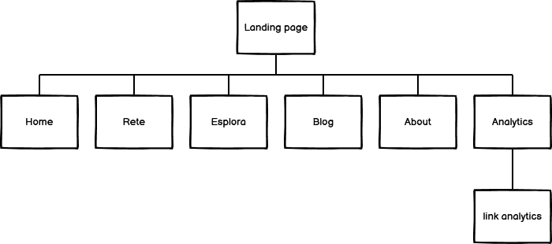
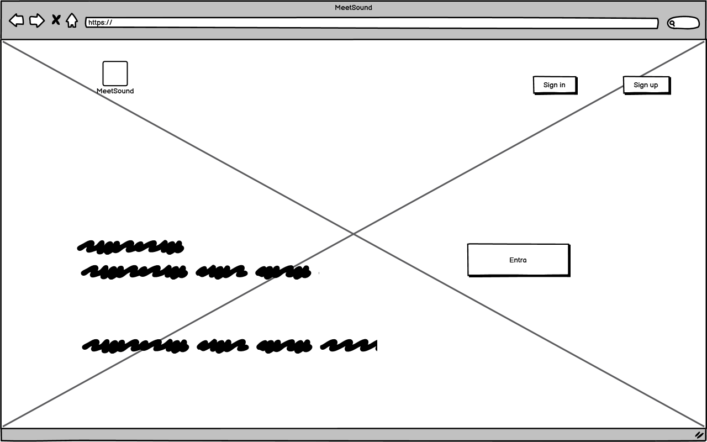
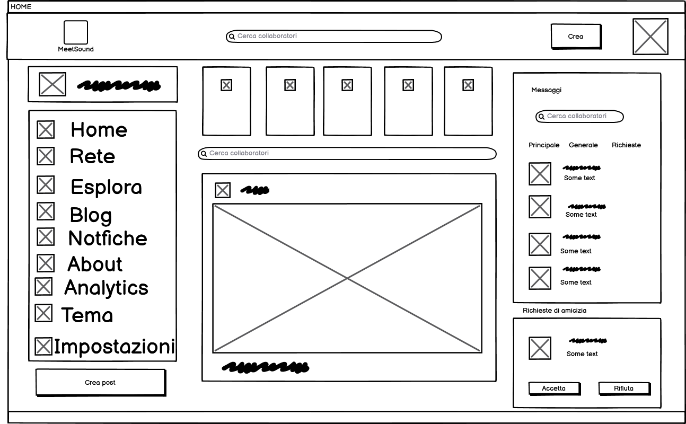
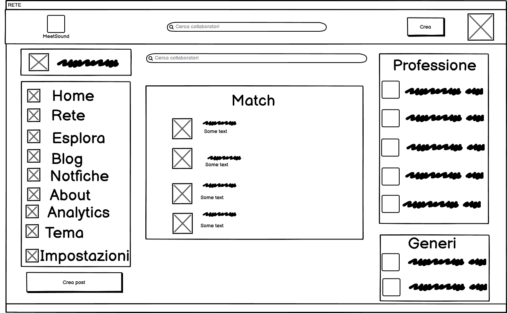
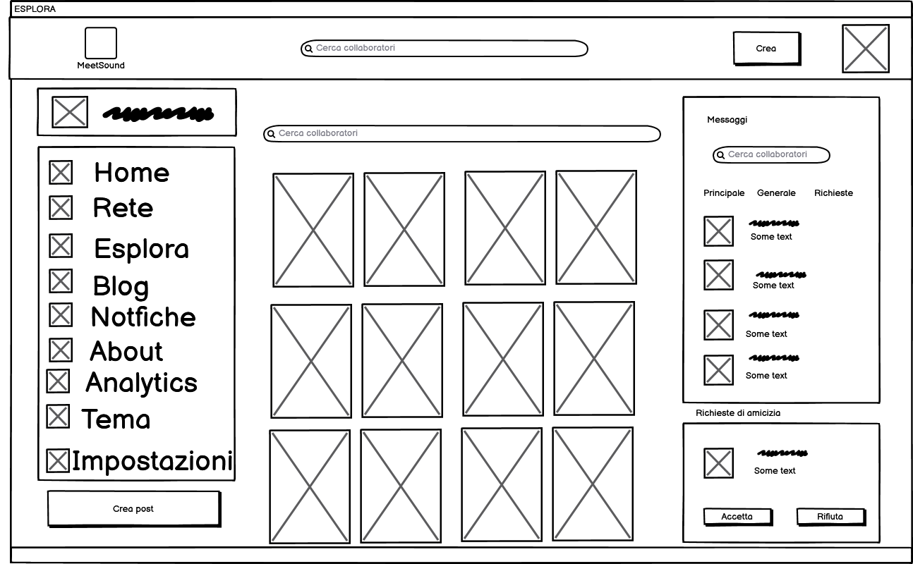
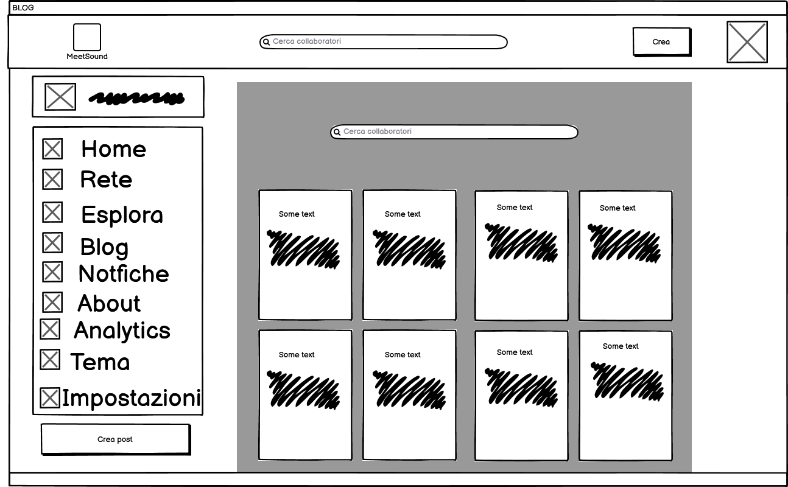

Bianca Conti
@dayi
Home
Rete
Esplora
Blog
9+Notifiche


Messaggi
About
Analytics
Tema
Impostazioni
Documentazione
Abstract
Il sito MeetSound si pone l’obiettivo di essere una piattaforma social in cui chi vive la musica come lavoro può connettersi in un ambiente interamente dedicato ad esso, interagire e costruire rapporti con altri utenti. Le persone a cui è rivolto questo social sono i musicisti autodidatti, e i professionisti del mondo della musica.
Il nostro sito permette di poter trovare e rimanere in contatto con persone che possano aiutare a sviluppare una carriera nell’industria musicale.
Project Management Plan
1. Benchmarking
Obiettivi
L’obiettivo di MeetSound è quello di permettere ai musicisti e ai professionisti del mondo della musica di poter sviluppare nuovi contatti e nuove opportunità, condividendo le proprie competenze professionali in questo ambito.
Target utente
Il target di MeetSound prevede, come sopracitato, i musicisti e i professionisti che lavorano in questo ambito (ingegneri del suono, fonici, tecnici, etc..).
Competitors
I siti web che offrono un servizio di social networking per musicisti sono presenti online in un numero abbastanza consistente, considerando il pubblico a cui sono rivolti. Per realizzare l’analisi dei competitors ci soffermiamo su alcuni siti in particolare: LoudUp, SoundCloud e Linkedin.
- LoudUp - ti permette di scoprire nuovi artisti, cercando in base al nome o al genere. Permette inoltre di trovare professionisti legati all’ambiente musicale utilizzando un menù a tendina o una pagina di ricerca in cui trovare la figura ricercata
- Soundcloud - Permette ai musicisti e produttori di caricare online le proprie tracce e potersi far notare dagli utenti. Spesso utilizzato per condividere cover e mixaggi realizzati da artisti dilettanti e professionisti.
- Linkedin - Celeberrima piattaforma specializzata per il mondo del lavoro, permette di connettere i professionisti alle aziende o ad altri professionisti, per sviluppare collaborazioni o trovare lavoro. Il target utente è sicuramente molto più vasto di Meetsound, poiché Linkedin contiene al suo interno tutte o quasi le tipologie di lavoro.
2. Struttura e layout
La struttura del sito prevede una Landing page iniziale oltre la quale si accede alle principali pagine del sito. Mnetre le altre voci di menù quali “Notifiche”, “Messaggi” e “Tema” permettono un’interazione aggiuntiva che l’utente può sperimentare. IN particolare nella voce “Tema” l’utente può sia cambiare la dimensione del testo sia cambiare i colori di alcuni aspetti della pagina.
Architettura ad albero
Wireframe
    
Look and feel
Fonts
È presente su tutto il sito un unico font: Poppins. La scelta non è casuale siccome questo è un font adattabile ad un ambiente moderno e interattivo marcando gli obiettivi comunicativi prefissati: di facile lettura ma al contempo con un gradevole design. Vi sono presenti inoltre sia frasi in grassetto sia frasi light.
colori
il sito è in dark mode, privo quindi di sfondi chiari. Oltre che essere una scelta aggressiva rispetto alla maggior parte dei siti sul web, che tuttavia stanno implementando la possibilità di cambiare colore del tema, anche qui il colore aiuta al raggiungimento degli obiettivi comunicativi: arrivare con uno stile aggressivo e giovanile nelle anime degli utenti.
3. Linguaggi e strumenti
I linguaggi web che sono stati utilizzati per la scrittura e l’editing del sito sono l’HTML (Hypertext Markup Language), del CSS(Cascading Style Sheets) e dello Javascript per alcune interazioni.
Per quanto riguarda gli strumenti utilizzati per la creazione del design è stato utilizzato Adobe XD; per la produzione del wireframe Balsamiq Wireframe
Communication Strategy
1. Background
L’idea principale dietro la realizzazione di questo sito nasce da una prospettiva diversa da quella dei competitor, che oltre a offrire un servizio fondamentale per chi lavora nel settore musicale, ovvero quello di connettere le persone, offre la possibilità di utilizzare questa piattaforma con un approccio in stile social con la possibilità di pubblicare post con foto e video, ma anche e soprattutto di poter scrivere blog nell’apposita sezione blog. Questo rende unico MeetSound.
Inoltre il punto fondamentale è quello di portare una piattaforma abbastanza grande da diventare univoca per chiunque, essendo un social vero e proprio, con l’obiettivo di essere al pari degli altri big quali Linkedin
Questo è ciò che fondamentalmente manca agli altri siti simili a MeetSound, cioè la caratteristica della popolarità del sito che soprattutto un social può portare.
2. Obiettivi comunicativi
La sua forza sarà quindi poter costruire una community all'interno del sito stesso, offrendo la possibilità di lavorarci sia dentro che fuori, costruendo e stringendo rapporti, sia di amicizia sia di interessi lavorativi.
3. Target audience e messaggio
Come ogni social, MeetSound non è differente nella scelta del target utente: chiunque abbia la voglia o la necessità di far parte di un luogo interamente dedicato ai suoi interessi e bisogni si ritroverà a voler partecipare al progetto.
La costruzione del sito verrà ovviamente sviluppata man mano dagli utenti, che grazie alla possibilità di postare, commentare e condividere saranno loro i principali promotori della piattaforma, luogo che verrà ingigantito un passo alla volta dagli utenti stessi. MeetSound è un social creato per la musica con la musica
Ovviamente esisterà comunque la possibilità di far entrare chiunque in MeetSound, perciò se l’utente non targhettizzato volesse far parte di questo mondo ha la possibilità di iscriversi e diventare membro del progetto.
L’obiettivo primario rimarrà sempre quello dell'interazione tra utenti che avranno la possibilità avere una presenza digitale in ambito musicale.
Non saranno però tollerati argomenti non inerenti all’ambito musicale generale.
4. Promozione
La prima soluzione che verrà adottata per la promozione di MeetSound sarà quella del passaparola dei principali social di messaggistica quali Whatsapp, Telegram. Successivamente verranno utilizzate le altre principali piattaforme social online quali Facebook, Instagram, Twitter e ovviamente Linkedin con delle sponsorizzate a pagamento.
5. Valutazione dei risultati
Le misure inizialmente utilizzate per monitorare la crescita del progetto saranno quelle delle visualizzazioni sulla piattaforma con un minimo di 50 visite, utilizzando come tool Google Analytics.
Successivamente, si andrà a vedere l’impatto sui social media citati precedentemente, soprattutto grazie al passaparola e alle possibili sponsorizzazioni da parte di micro e macro influencer.